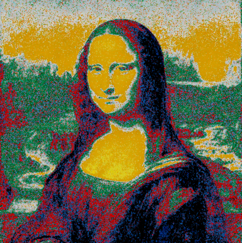
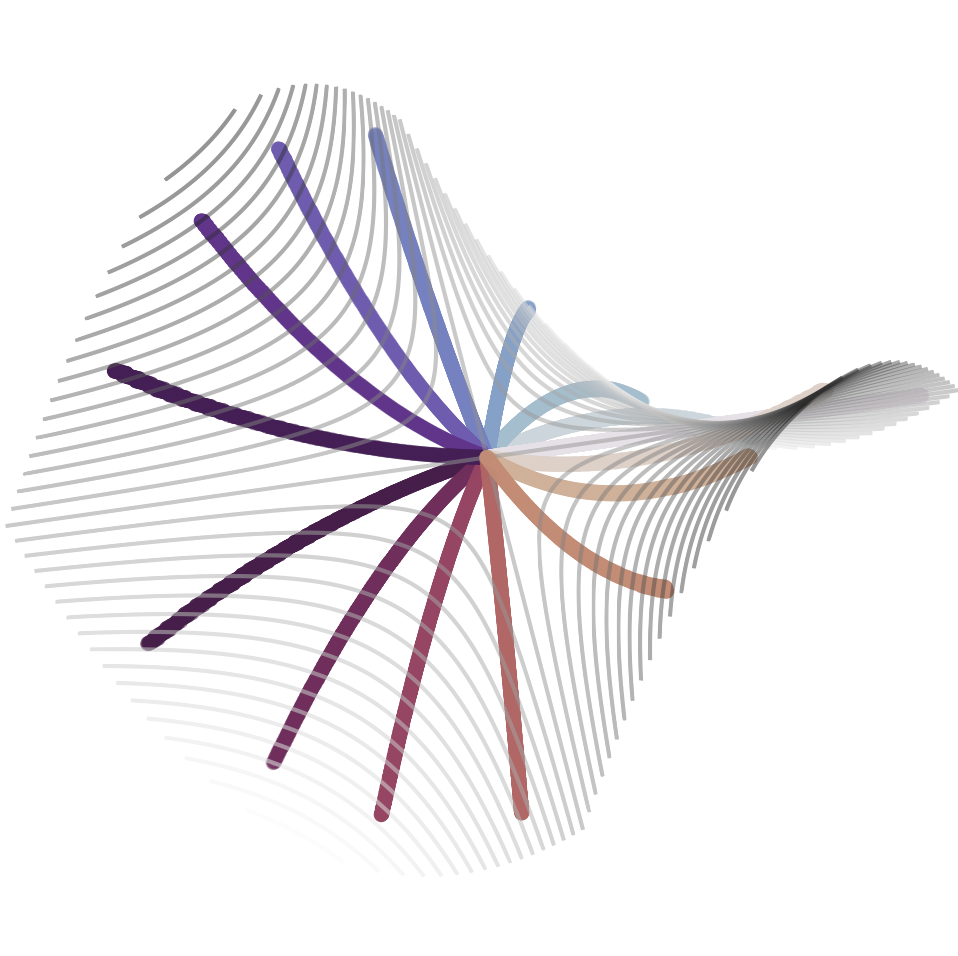

Colorization via optimal transport
This aim of this project is to colorize an image with pixels from another using optimal transport.
CodeGeodesics of surfaces
A code which computes and plots geodesics on a surface given by a height function.
Code